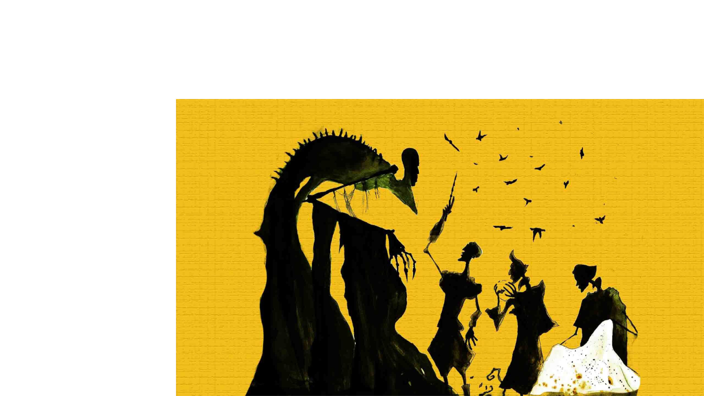
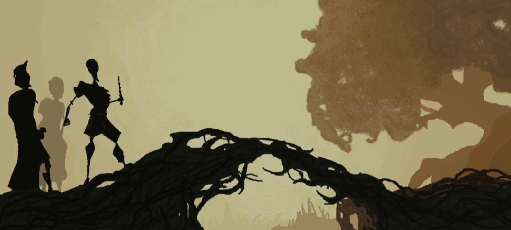
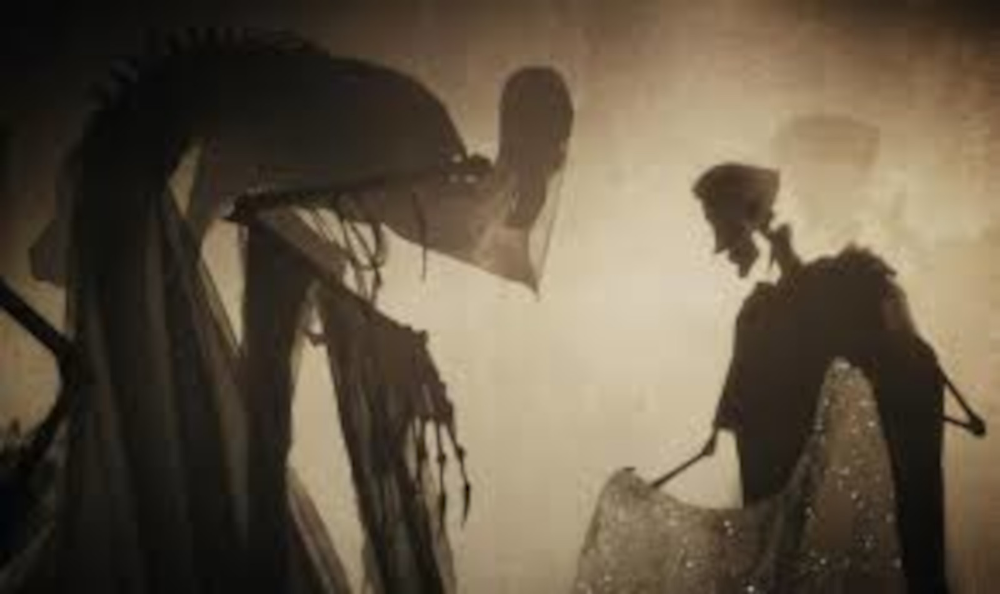

Los Tres Hermanos
Había una vez tres hermanos que viajaban por un camino solitario y tortuoso al atardecer. En un punto del camino, los hermanos llegaron a un río demasiado peligroso para cruzar. Sin embargo, estos hermanos eran versados en las artes mágicas y simplemente conjuraron un puente para cruzar.
Estaban a la mitad del puente cuando se encontraron con una figura encapuchada. Era la Muerte y se sentía engañada porque normalmente los viajeros se ahogaban en el río. Pero la Muerte era astuta. Fingiendo felicitar a los tres hermanos por su magia, les otorgó un premio a cada uno.
El mayor pidió una varita más poderosa que cualquier otra existente; la Muerte se la confeccionó de un saúco que estaba en la orilla del río. El segundo hermano pidió la habilidad para traer a los muertos de vuelta a la vida; la Muerte recogió una piedra del río y se la entregó. El más joven de los hermanos, que era el más humilde y también el más sabio, no pidió nada que pudiera ser usado para vencer a la Muerte. Le pidió a la Muerte una capa que le permitiera esconderse incluso de ella misma. La Muerte, a regañadientes, le dio su propia capa de invisibilidad.
